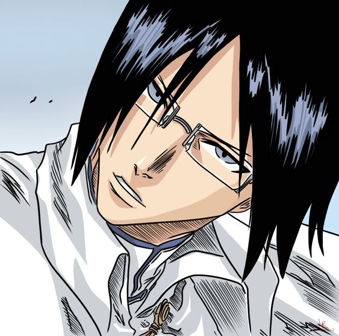
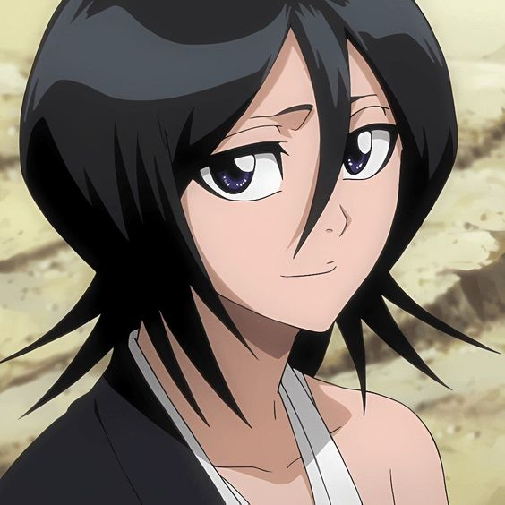
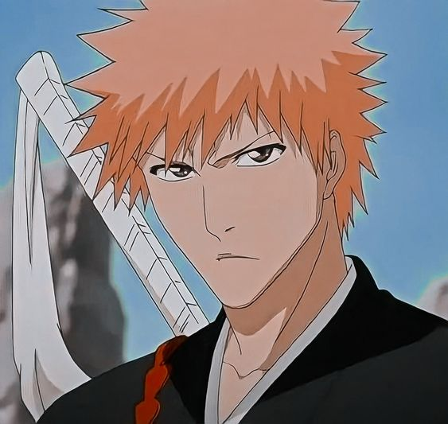
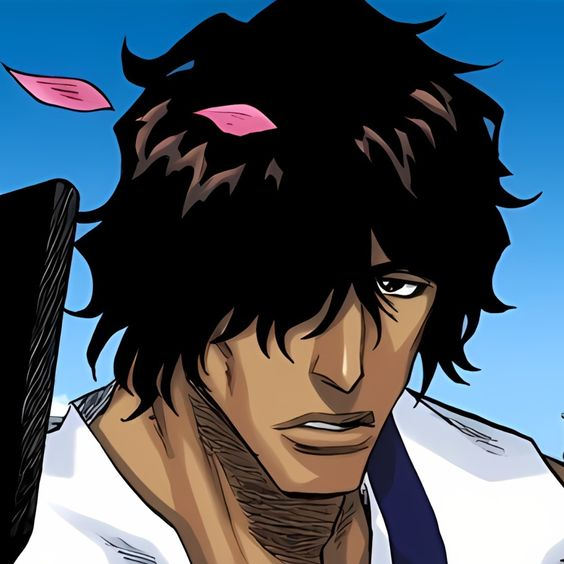

Ichigo Kurosaki es un estudiante de instituto de 15 años, que tiene una peculiaridad: es capaz de ver, escuchar y hablar con fantasmas. Pero no sabe hasta dónde puede abarcar la clasificación de espíritus, ni lo que conlleva el saberlo. Un buen día una extraña chica, de pequeña estatura y que viste ropas negras de samurai, entra en su cuarto. Se llama Rukia Kuchiki, y es una Shinigami (Dios de la Muerte). Ante la incredulidad de Ichigo, le explica que su trabajo es mandar a las almas buenas o plus a un lugar llamado la Sociedad de Almas, y eliminar a las almas malignas o hollows.
   La adaptación a serie de anime por el estudio Ufotable fue anunciada en el número 27 de la revista Weekly Shōnen Jump el 4 de junio de 2018.La serie se emitió del 6 de abril al 28 de septiembre de 2019 en Tokyo MX, GTV, GYT, BS11 y otros canales. El anime fue dirigido por Haruo Sotozaki, con guiones del personal de Ufotable, música de Yuki Kajiura y Go Shiina, y diseño de personajes de Akira Matsushima. El tema de apertura es «Gurenge» (紅蓮華?) de LiSA,mientras que el tema de cierre es «from the edge» (フロム・ジ・エッジ Furomu ji ejji?) de FictionJunction y LiSA. El ending para el episodio 19 es «Kamado Tanjirō no Uta» (竈門炭治郎のうた?) de Go Shiina con Nami Nakagawa. Fue emitido en streaming por Crunchyroll, Hulu y FunimationAnimeLab transmitió simultáneamente la serie en Australia y Nueva Zelanda.
La serie adapta el manga de Kubo con los arcos de la historia principal y presenta los exclusivos del anime. En la ciudad de Karakura, el estudiante de secundaria Ichigo Kurosaki se convierte en un sustituto de Soul Reaper (死神, Shinigami , literalmente, " Dios de la muerte ") , cuando Rukia Kuchiki arriesga su vida para protegerlo de un Hollow . Aunque inicialmente reacio a aceptar su responsabilidad, él toma su lugar, y durante este tiempo descubren que algunos compañeros de clase son espiritualmente conscientes y tienen sus propios poderes: el sobreviviente de Quincy, Uryū Ishida, usa partículas espirituales, Orihime Inoue tiene un grupo de espíritus protectores llamado Shun . Shun Rikkay Yasutora Sado ("Chad") tiene una fuerza igual a los Hollows encerrados en su brazo.
Cuando Rukia es sentenciada a muerte por transgresiones en el mundo humano y enviada a la Sociedad de Almas, Ichigo conoce a Kisuke Urahara y Yoruichi Shihōin , el dúo de Soul Reapers exiliados. Le permiten a él y a sus amigos salvar a Rukia. Después de esto, se revela que el ex-capitán de escuadrón Sōsuke Aizenincriminó a Rukia por el crimen y ha estado experimentando ilegalmente con Soul Reapers y Hollows. Aizen planea conquistar la Sociedad de Almas utilizando el Hōgyoku, una poderosa sustancia legendaria que convierte a los Hollows en mitad Soul Reapers. Después de fingir su muerte y su reaparición provocó una pelea con algunas personas, Aizen escapa a Hueco Mundo, el reino de Hollows, y luego secuestra a Orihime, ya que ella es fundamental en la creación del Oken, un poder que le permitirá matar al Soul King. el gobernante de la Sociedad de Almas.
Después de ser entrenado por los Vizards , otros Soul Reapers exiliados y las víctimas del experimento de Aizen, Ichigo y sus amigos viajan a Hueco Mundo. Enfrentando a un grupo de Arrancars , que son Hollows a los que se les han dado habilidades Soul Reaper, liderados por un grupo de élite conocido como Espadas , que está compuesto por diez Arrancars con una fuerza ejemplar. Espadas sirven como comandantes en el ejército de Aizen y cada uno tiene facciones de Arrancars más débiles. Junto a Aizen, Gin Ichimaru y Kaname Tōsen, los Espada como grupo poseen una fuerza comparable a los capitanes de Soul Reaper. Después de rescatar a Orihime, Aizen revela que su secuestro fue una distracción para permitirle tomar la ciudad de Karakura, ya que su energía espiritual es lo que se necesita para Oken. Después de ser entrenado por su padre Isshin , otro Soul Reaper exiliado, Ichigo sacrifica su poder para sellar a Aizen cuando el Hōgyoku rechaza a su maestro, y los Soul Reapers derrotan a los Espadas.
Meses después, Chad y los miembros se revelan como Fullbringers en un grupo llamado Xcution. Pueden renunciar a sus poderes para restaurar otros y planean hacerlo por Ichigo, quien usa el poder de Fullbringer. Sin embargo, todo es una artimaña de su líder Kugo Ginjo, un Fullbringer y ex sustituto de Soul Reaper, para extraer sus poderes y empoderarlos a todos. Ichigo recupera sus poderes de Soul Reaper, cuando se gana la confianza de la Sociedad de Almas. Después de ayudar a otros Soul Reapers a derrotar al equipo de Ginjo, Ichigo reanuda su deber como Soul Reaper sustituto.
Durante la serie se presentan varios arcos argumentales exclusivos del anime. El primer arco se centra en los Bount, un grupo de humanos espirituales que son inmortales por más tiempo al robar almas. Su líder, Jin Kariya, busca destruir la Sociedad de Almas en venganza. Sin embargo, Ichigo y sus aliados los derrotan. El segundo arco se centra en Shūsuke Amagai, un capitán de Soul Reaper que reemplaza a Ichimaru. Amagai busca venganza contra el Capitán Yamamoto por la muerte de su padre y usa el experimento prohibido del clan. Sin embargo, Amagai se da cuenta de su error y se suicida. El tercer arco presenta al malvado espíritu Zanpakutō Muramasa, quien se convierte a sí mismo y a otros en seres espirituales para vengarse de la Sociedad de Almas por encarcelar a su maestro Kōga Kuchiki. Después de tener éxito, es traicionado y se transforma en una criatura monstruosa que Ichigo derrota. pero después de que Muramasa revela que la intención era que Soul Reapers y Zanpakutō se comunicaran en igualdad de condiciones. El cuarto y último arco presenta un evento en el que Kagerōza Inaba crea copias modificadas de todos los Soul Reapers en cuerpos Reigai. Intenta fusionarse con Nozomi Kujō en un ser original Ōko Yushima. Sin embargo, Nozomi se sacrifica para derrotar a Inaba e Ichigo pierde su poder.